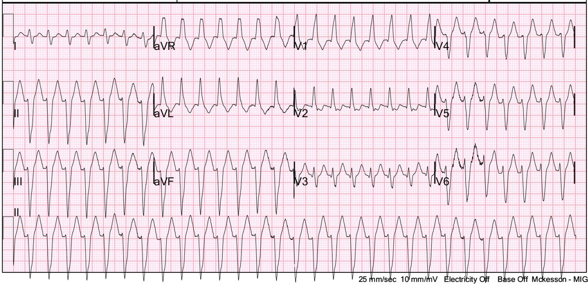
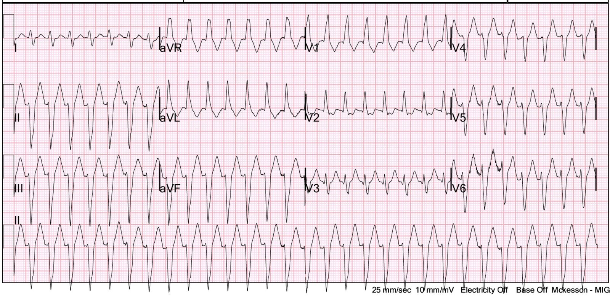
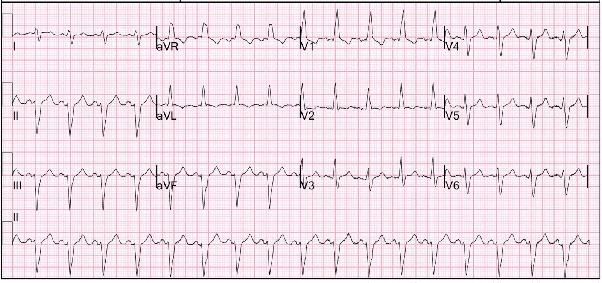
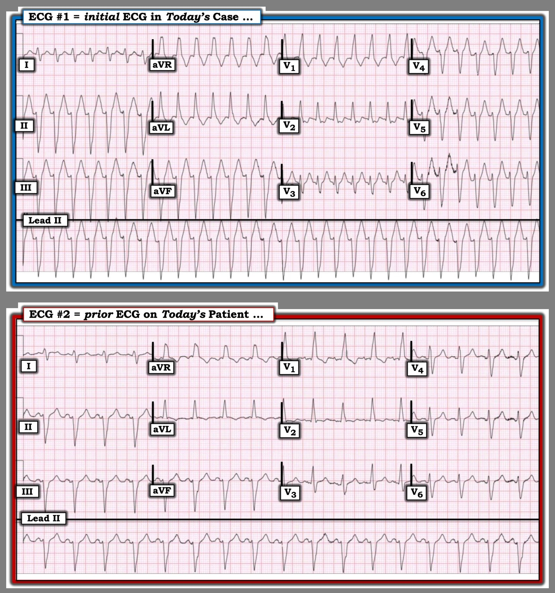
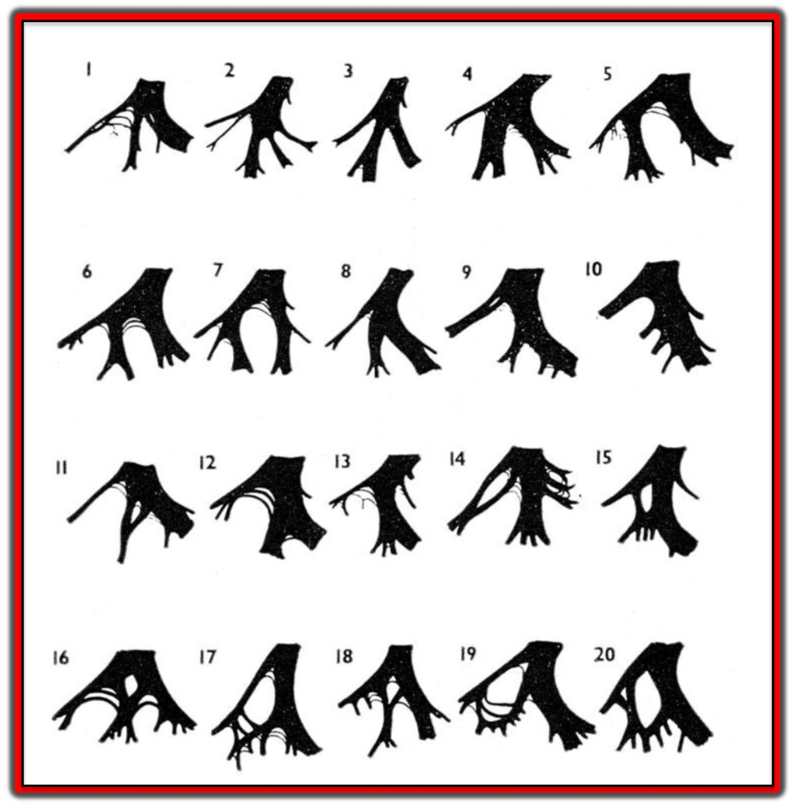

23/08/2026 — “Adenosine 12 mg x 2 không hiệu quả, và sốc điện chuyển nhịp 200J x 2 cũng vậy”
Bản dịch tiếng Việt của bài "“12 mg of adenosine x 2 did not work, and neither did Electrical Cardioversion at 200J x 2”" – Dr. Smith’s ECG Blog. Giữ nguyên toàn bộ 4 hình ảnh của bản gốc.


Điện tâm đồ này được gửi cho tôi kèm lời nhắn sau:
“Bệnh nhân hơn 60 tuổi, khó thở. Đã thử adenosine 12 mg x 2 (không có tác dụng gì – không có khoảng ngưng hay thay đổi gì trên monitor). Đã thử sốc điện chuyển nhịp 200 Joule x 2, không hiệu quả. Huyết áp ổn.”


Bạn nghĩ gì?
Đây là gì và bạn sẽ làm gì?
Tôi nói rằng đây là VT phân nhánh sau (posterior fascicular VT) điển hình vì nó có hình dạng RBBB và LAFB. Nếu chức năng thất trái tốt (và trong ca này, các bác sĩ điều trị cho biết siêu âm tim tại giường thấy chức năng tốt), thì verapamil là thuốc được lựa chọn.
Xem phân tích chi tiết của Ken Grauer bên dưới.
Họ đã cho metoprolol và thành công. Điều này không thường gặp trong VT phân nhánh sau.
Sau đó, tôi vào xem hồ sơ bệnh án. Tôi tìm các điện tâm đồ trước đây và tất cả đều cho thấy như sau:


Bạn thấy gì?
Khi bệnh nhân ở nhịp xoang, ông ấy có RBBB và LAFB!
Điều đó chứng minh rằng 1) đây không phải VT phân nhánh sau và 2) đây là SVT kèm RBBB/LAFB có sẵn từ trước.
Trớ trêu thay, nếu sốc điện và adenosine không hiệu quả, thì verapamil lại một lần nữa là lựa chọn rất tốt. Nhưng trước hết nên thử adenosine liều cao hơn. Ít nhất 18 mg.
Những điểm cần học:
Khi gặp một rối loạn nhịp nhanh, luôn xem các điện tâm đồ trước đây, nếu có. Bất kỳ hình dạng QRS bất thường nào có mặt khi nhịp xoang cũng sẽ có mặt trong SVT.
Tìm hiểu về các hội chứng nhịp nhanh thất vô căn:
Xem bài viết tuyệt vời này của Pendell: Idiopathic Ventricular Tachycardias for the EM Physician
Các ca khác:
Xem: A 50-year old with palpitations. How will you treat?
A 12 year old with Wide Complex Tachycardia
Một ca “VT vô căn, VT đường ra thất phải, hay RVOT VT” khác: Wide Complex Tachycardia, intermittent
= = =
==================================
BÌNH LUẬN CỦA TÔI, bởi KEN GRAUER, MD (23/8/2026):
Ca bệnh hôm nay của Dr. Smith nhắc chúng ta rằng ngay cả khi cách tiếp cận một rối loạn nhịp của chúng ta là tối ưu — chúng ta không phải lúc nào cũng đi đến câu trả lời đúng.
- Để rõ ràng (và để dễ so sánh), trong Hình 1 — tôi đã đặt cả hai điện tâm đồ của ca hôm nay cạnh nhau.
= = =
Vì sao điện tâm đồ #1 trông giống VT phân nhánh?
Nhận định của tôi về điện tâm đồ ban đầu hôm nay cũng giống nhận định của Dr. Smith — cụ thể là nhịp của bản ghi này trông gần như chắc chắn là VT phân nhánh. Nhưng dù nhận định VT của chúng ta có vẻ “đúng” đến đâu — hóa ra nó lại sai. Xem xét một cách hệ thống — cách tiếp cận của tôi với bản ghi này như sau:
- Điện tâm đồ ban đầu này trong ca hôm nay (Bản ghi phía trên trong Hình 1) — là một nhịp nhanh QRS rộng (WCT) đều (Wide-Complex Tachycardia) với tần số ~180/phút, không có dấu hiệu rõ ràng của hoạt động nhĩ. Ở một người lớn tuổi (người đàn ông này trên 60 tuổi) — xác suất thống kê để một WCT đều không có sóng P hóa ra là VT xấp xỉ 90%, ngay cả trước khi chúng ta bắt đầu đánh giá hình dạng QRS. Do đó — chúng ta bắt đầu một cách đúng đắn với giả định rằng nhịp này là “VT cho đến khi chứng minh được điều ngược lại”, biết rằng chúng ta sẽ đúng ít nhất 90% số trường hợp.
- Trong các loại VT khác nhau — VT phân nhánh là một dạng đặc biệt vì: i) Đây thường là một dạng VT “vô căn”, trong đó bệnh nhân không có bệnh tim cấu trúc nền; — ii) VT phân nhánh dễ được nhận ra vì nó giống hình dạng của blốc hai phân nhánh (tức là, giống hình dạng rbbb/lahb hoặc rbbb/lphb) — và, iii) Nhịp này đáp ứng cực kỳ tốt với Verapamil tĩnh mạch (Xem Bình luận của tôi ở cuối trang trong bài ngày 9 tháng Ba năm 2026 để biết thêm về VT phân nhánh và các dạng VT vô căn khác).
= = =
Đối với nhịp WCT đều mà chúng ta thấy trong Hình 1 — chẩn đoán phân biệt chính là giữa: i) VT, VT, VT; — so với — ii) Một dạng nhịp SVT nào đó kèm hoặc blốc nhánh có sẵn từ trước hoặc dẫn truyền lệch hướng liên quan tần số.
- Điểm MẤU CHỐT: Phần lớn trường hợp — hình dạng QRS khi có dẫn truyền lệch hướng liên quan tần số sẽ giống một dạng rối loạn dẫn truyền nào đó (tức là, RBBB, LBBB, blốc phân nhánh trái trước hoặc trái sau, RBBB kèm một trong các blốc phân nhánh).
- Nếu hình dạng QRS trong một WCT đều không giống bất kỳ dạng rối loạn dẫn truyền nhận ra được nào nêu trên — thì điều này nghiêng về VT là nguyên nhân (và khả năng thống kê của VT tăng lên trên 90%).
= = =
Dù đã nói như trên — Mặc dù hình dạng QRS trong điện tâm đồ ban đầu hôm nay quả thật giống hình ảnh blốc hai phân nhánh RBBB/LAHB — vẫn có một số đặc điểm không điển hình tinh tế đối với một dạng dẫn truyền rbbb/lahb trên thất. Đây là lý do ban đầu tôi nghi ngờ rằng điện tâm đồ #1 nhiều khả năng nhất là VT phân nhánh. Những đặc điểm không điển hình này rất tinh tế (!) — và bao gồm:
- Mặc dù dạng qR của QRS ở chuyển đạo V1 trong điện tâm đồ ban đầu hôm nay phù hợp với RBBB — việc không có dạng ba pha (rsR’ ) ở chuyển đạo V1 có nghĩa là chúng ta không thể phân biệt một cách tin cậy giữa dẫn truyền rbbb so với ổ ngoại vị thất trái.
- Thông thường với dẫn truyền rbbb — hình dạng rbbb còn được duy trì nhiều hơn so với những gì tôi thấy ở chuyển đạo V3 của điện tâm đồ #1.
- Phát hiện 3 chuyển đạo liên tiếp V4,V5,V6 trông gần như giống hệt nhau với hình dạng chủ yếu là r rất nhỏ/S sâu có vẻ nhiều khả năng gặp trong VT hơn là trong dẫn truyền rbbb trên thất.
- Sóng r khởi đầu ở mỗi chuyển đạo dưới đều rất nhỏ, kèm sóng S rất sâu. Điều này có vẻ nhiều khả năng gặp trong VT hơn là trong dẫn truyền rbbb trên thất.
- Phức bộ rs ở chuyển đạo I nhỏ bất thường và đẳng điện, khiến trục mặt phẳng trán vào khoảng -90 độ — điều này có vẻ nhiều khả năng gặp trong VT hơn là trong dẫn truyền rbbb trên thất.
- “Ấn tượng tổng thể” (Gestalt) chung của tôi về điện tâm đồ #1 là mặc dù nó có thể là một nhịp trên thất nếu điện tâm đồ nền của bệnh nhân này cũng bất thường tương tự — tôi cho rằng khả năng đó thấp hơn nhiều so với xác suất nhịp này là VT phân nhánh.
= = =
Hình 1: So sánh giữa 2 điện tâm đồ trong ca hôm nay.


= = =
Đọc điện tâm đồ có thể khiến ta phải khiêm tốn …
Và rồi Dr. Smith đã tinh ý xem hồ sơ bệnh án của bệnh nhân này — và tìm thấy một loạt bản ghi trước đây đều trông giống điện tâm đồ #2 trong Hình 1.
- Hầu như tất cả những phát hiện tinh tế tôi nêu ở trên mà phần lớn trường hợp sẽ phù hợp với nguồn gốc thất — hóa ra lại là đặc điểm điện tâm đồ “nền” của bệnh nhân này khi ở nhịp xoang!
- Những bản ghi trước đây này chứng minh rằng điện tâm đồ ban đầu hôm nay thực ra là một SVT đều với tần số ~180/phút kèm RBBB/LAHB có sẵn từ trước . Với tần số nhanh như vậy — gần như chắc chắn đây là một SVT vào lại (nhiều khả năng nhất là AVNRT) — điều này giải thích việc chuyển nhịp bằng thuốc thành công sau khi tiêm Metoprolol tĩnh mạch.
- ĐIỂM THEN CHỐT (PEARL) #1: Chúng ta được cho biết rằng “cả sốc điện chuyển nhịp lẫn Adenosine đều không hiệu quả”. Nhưng chúng ta cần hoài nghi mô tả đó cho đến khi thấy bản in lưu lại các dải nhịp liên tục cho thấy không có đáp ứng với sốc điện chuyển nhịp và Adenosine.
- Điều có khả năng cao hơn nhiều — là đã có sự chậm lại thoáng qua, ngắn ngủi của nhịp (chuyển nhịp) — rồi rất nhanh chóng quay trở lại AVNRT. Đó là vì AVNRT hầu như luôn đáp ứng ít nhất thoáng qua với sốc điện chuyển nhịp và/hoặc Adenosine — nhưng thường nhanh chóng quay lại AVNRT trừ khi bắt đầu dùng một thuốc tác dụng dài hơn như Metoprolol!
- “Bài học”: Hãy chắc chắn luôn luôn ghi lại (rồi quay lại nghiên cứu các bản ghi đó) những gì xảy ra khi bạn sốc điện chuyển nhịp và/hoặc chuyển nhịp bằng thuốc sau khi cho Adenosine (tức là, Thường cần ghi liên tục 60-90 giây sau khi cho Adenosine — cho đến khi thuốc hết tác dụng). Nếu không làm vậy — bạn sẽ bỏ lỡ những khoảnh khắc then chốt bộc lộ tác dụng chẩn đoán thoáng qua của Adenosine.
- ĐIỂM THEN CHỐT (PEARL) #2: Bản ghi nền của bệnh nhân này không “bình thường” — vì nó cho thấy blốc hai phân nhánh. Và giờ ông ấy lại vào khoa cấp cứu (ED) vì một cơn AVNRT khác.
- Cần theo dõi tiếp để xác định vì sao ông ấy có RBBB/LAHB — và liệu có cần chuyển đến bác sĩ tim mạch điện sinh lý (EP) để cân nhắc thủ thuật triệt đốt hay không.
= = =
Bài học cuối cùng cần rút ra!
Tôi đã nghiên cứu hình dạng QRS trong các nhịp WCT suốt nhiều thập kỷ (Xem Bình luận của tôi ở cuối trang trong bài ngày 10 tháng Năm năm 2026 — chỉ là một trong nhiều ví dụ về điều này trên Dr. Smith’s ECG Blog). Trong suốt thời gian đó — tôi nhận thấy việc đánh giá hình dạng QRS trong một nhịp WCT có độ chính xác ấn tượng trong việc dự đoán có VT hay không.
- Không phải bệnh nhân nào cũng đọc sách giáo khoa. Thỉnh thoảng, bất chấp hình dạng QRS “không điển hình” — một bệnh nhân có thể đến với nhịp WCT đều có hình dạng QRS không điển hình giống hệt điện tâm đồ nền của họ khi ở nhịp xoang (đúng như đã xảy ra trong ca hôm nay).
- Đó là lý do vì sao bất cứ khi nào thời gian cho phép — điều quan trọng là xem lại hồ sơ bệnh án của bệnh nhân (như Dr. Smith đã làm trong ca hôm nay). Rồi quay lại so sánh điện tâm đồ nền của bệnh nhân với hình dạng QRS mà bạn thấy trong nhịp WCT!
= = =
PHẦN BỔ SUNG (24/8/2026):
Tôi nhận được lời nhắn sau từ Dr. Martin Royle (tôi có chỉnh sửa đôi chút):
“Chào Dr Grauer. Tôi là một bác sĩ điện sinh lý tim từ Vương quốc Anh. Tôi cố gắng theo dõi trang web của Steve Smith và dĩ nhiên cả những phân tích chuyên sâu của ông.
- Nhịp WCT trong điện tâm đồ #1, vốn được cho là VT phân nhánh, nhưng lại có các đặc điểm QRS giống hệt khi ở nhịp xoang — đã được xếp là SVT kèm RBBB/LAFB có sẵn từ trước.
- RBBB rõ ràng là không điển hình trong ca này, và ông có đề cập đến điều đó. Lý do chính khiến RBBB trông không điển hình — là vì nó không phải RBBB. Thay vào đó — nó trông giống LSFB (blốc phân nhánh vách trái — Left Septal Fascicular Block), kèm thêm LAFB.
- Trong LSFB — các lực hướng ra trước chiếm ưu thế rất rõ, do đó có sóng R lớn ở chuyển đạo V1.
- Điều này gợi ý rằng trong ca hôm nay, LPF là phần duy nhất còn lành của LBB, và rất vững vàng vì LBBB không xuất hiện trong SVT.
- Đây là lý do vì sao thuật ngữ “hemiblock” (blốc nửa nhánh) đã lỗi thời và sai — vì thường có 3 phân nhánh. Trân trọng — Martin”.
Trả lời của tôi: Tôi chân thành cảm ơn Dr. Royle vì bình luận tinh tường và sâu sắc của ông về bài viết hôm nay. Mặc dù câu hỏi “Left Septal Fascicular Bloc: Myth or Reality?” (Blốc phân nhánh vách trái: hoang đường hay có thật?) đã gây tranh cãi trong nhiều năm — ngày càng có nhiều bằng chứng ủng hộ từ các nghiên cứu giải phẫu cho thấy LSFB thật sự tồn tại, dù thường bị bỏ qua ngay cả bởi những người đọc điện tâm đồ giàu kinh nghiệm.
Tôi tin rằng lý do của sự tranh cãi này hiện rõ ngay khi xem lại phần LSFB trong bài báo của MacAlpin (Tạp chí Indian Pacing Electrophysiol J:3(3):157-177, năm 2003):
- Dr. MacAlpin nêu bật bằng chứng từ các nghiên cứu giải phẫu cho thấy ở phần lớn người, LBB (nhánh trái) chia thành 3 (không phải 2) phân nhánh = LAF (phân nhánh trái trước) — LPF (phân nhánh trái sau) — và phân nhánh giữa hay phân nhánh vách (tức LSF). Như Dr. Royle đã nhấn mạnh trong email gửi tôi — thuật ngữ blốc “nửa nhánh” (hemi-block) đã lỗi thời và sai, vì thường có 3 phân nhánh.
- Dù đã nói như trên — mẫu tái dựng mô học do Demoulin và Kulbertus thực hiện (mà tôi trình bày bên dưới trong Hình 2) làm nổi bật mức độ biến thể giải phẫu đáng kể có thể gặp ở nhánh trái (LBB). Mặc dù chi tiết về các biến thể giải phẫu này vượt quá phạm vi bài ECG Blog hôm nay (và cũng vượt quá chuyên môn của tôi trong lĩnh vực này) — các tiêu chuẩn đa dạng và thay đổi cho LSFB mà MacAlpin trích dẫn phản ánh cả khả năng biến thể giải phẫu này của LSF, cũng như ảnh hưởng mà tổn thương dẫn truyền thêm ở LAF, LPF và/hoặc RBB có thể gây ra khi so với các tiêu chuẩn chẩn đoán để nhận biết LSFB đơn độc. Nói gọn lại, dù hoàn toàn thừa nhận LSFB tồn tại — tôi thấy khó nhận ra rối loạn dẫn truyền này.
- 2 tiêu chuẩn của LSFB mà tôi thấy dễ hình dung và dễ nhớ nhất là: i) Mất sóng q vách ở các chuyển đạo dưới và/hoặc bên (khi trước lúc khởi phát LSFB, các chuyển đạo đó ban đầu có biểu hiện sóng q vách); — và, ii) Tăng các lực hướng ra trước (mà như Dr. Royle đã lưu ý — có thể giải thích sóng R cao, đơn pha ở chuyển đạo V1 và V2 trong cả hai bản ghi ở Hình 1).
- Dr. Royle chỉ ra rằng có vẻ có blốc hai phân nhánh (LSFB + LAHB) trong ca hôm nay. Liệu ngoài LSFB/LAHB còn có thêm thành phần chậm dẫn truyền nhánh phải (RBB) hay không, tôi nghĩ là không chắc chắn nếu chỉ dựa vào Hình 1.
- LƯU Ý: Với bạn đọc quan tâm đến một số ví dụ bản ghi điện tâm đồ minh họa LSFB — Hãy xem Hình 3 đến 12 trong bài báo của MacAlpin đã trích dẫn ở trên.
- ĐIỀU CỐT LÕI: Tôi thấy gợi ý LSFB của Dr. Royle rất sâu sắc trong việc giải thích các đặc điểm điện tâm đồ không điển hình đối với dẫn truyền trên thất trong ca hôm nay mà tôi đã đề cập ở trên trong phần Bình luận của tôi — đây càng là lý do để luôn cân nhắc khả năng bản ghi nền bất thường rõ rệt khi đánh giá hình dạng QRS trong một nhịp WCT. Và, khi có chút thời gian — giá trị của việc tìm hồ sơ bệnh án của bệnh nhân (như Dr. Smith đã làm) để tìm một bản ghi trước đây nhằm so sánh.
= = =


Hình 2: Minh họa các biến thể của hệ thống dẫn truyền thất trái, dựa trên tái dựng giải phẫu từ các lát cắt mô học liên tiếp của 20 quả tim bình thường. (Hình này trích từ bài báo của MacAlpin đã dẫn ở trên — ghi công Demoulin và Kulbertus từ công bố gốc năm 1972 của họ trên British Heart Journal.)
= = =
= = =
= = =